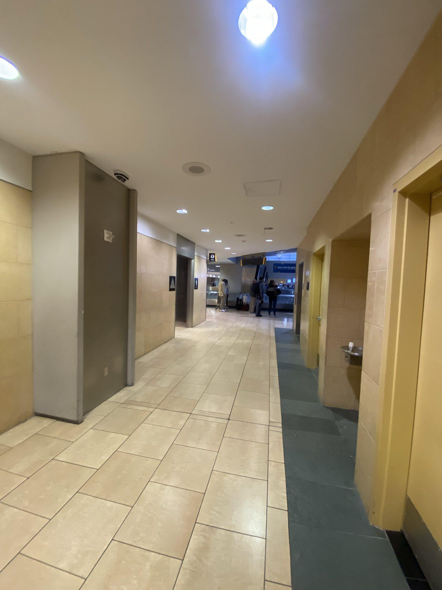
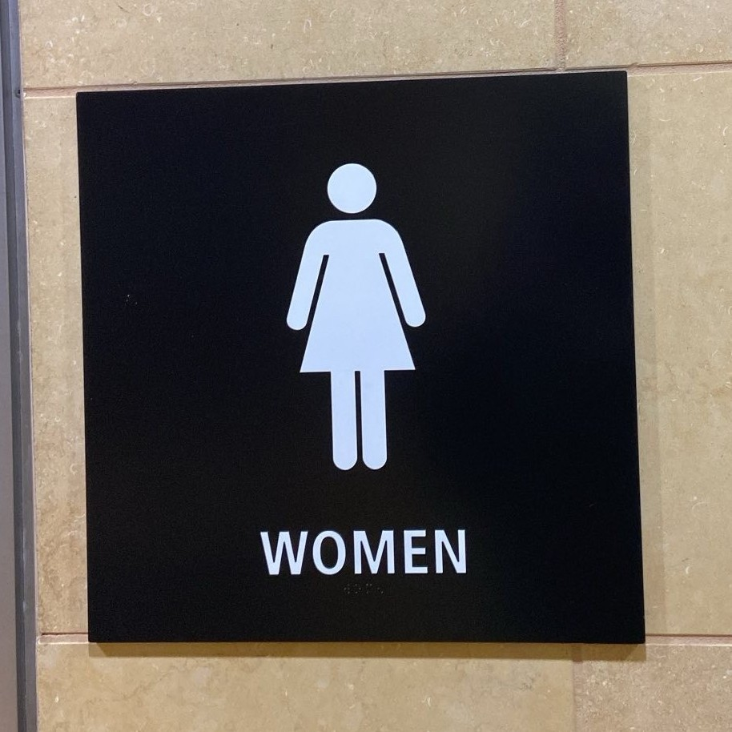
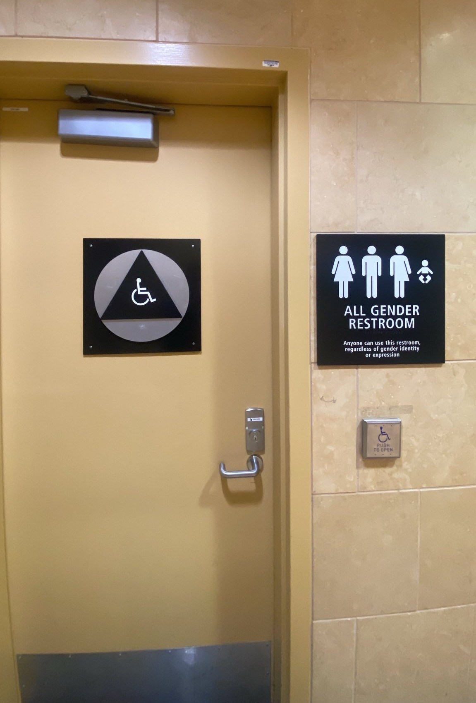
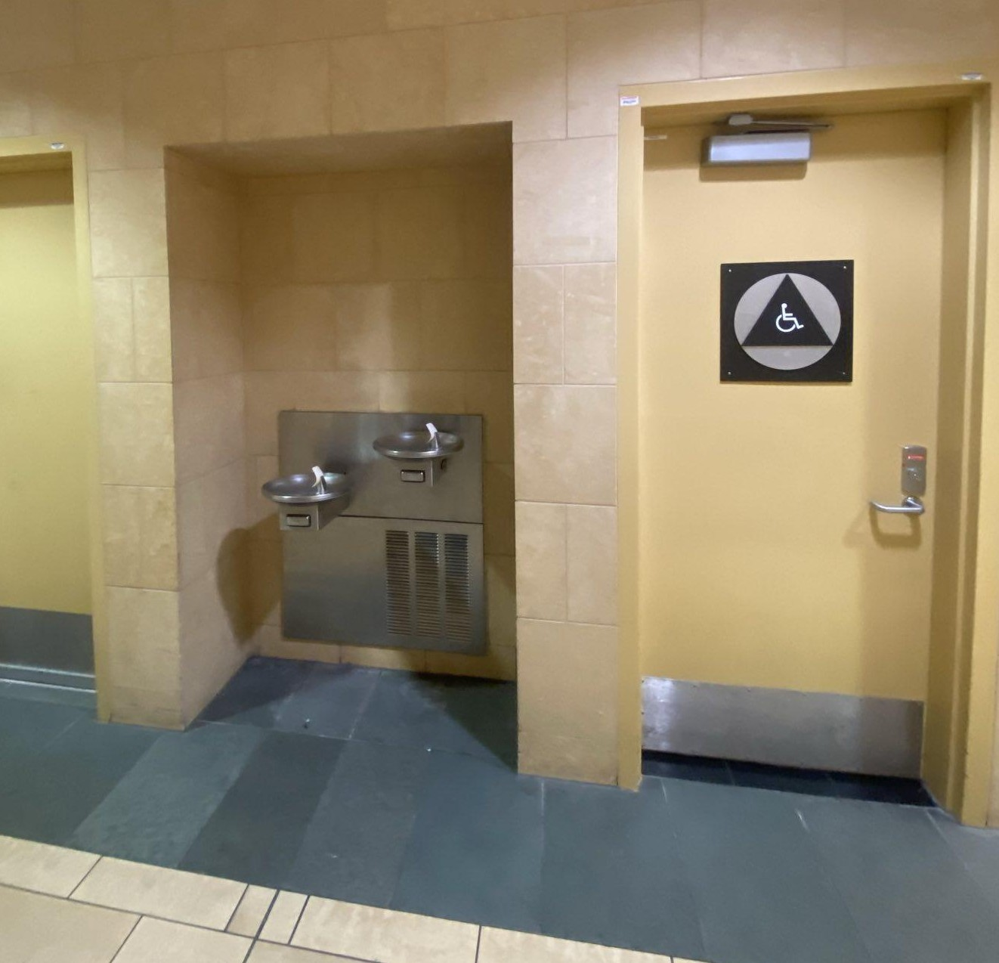

La primera planta es la de recogida de equipajes y llegadas.
En la segunda planta está la TSA/Seguridad y salidas. Está dividida en dos secciones y para ir de una a otra hay que
bajar las escaleras
salir a la segunda planta
Recomendamos entrar en el aeropuerto por la Terminal 2.
Si se encuentra de frente al aeropuerto:
Vaya hacia la izquierda para llegar a: United, JetBlue, Delta
Vaya a la derecha para llegar a: Alaska, American
Baja las escaleras y camina hacia la derecha (unos 10 minutos) para llegar a: terminal 1 (Frontier, Spirit, Southwest)
Es mejor comprar el billete de avión por Internet. Sólo algunas aerolíneas le permitirán comprar un billete en el mostrador, y normalmente hay que pagar una tasa. Los mostradores no aceptan dinero en efectivo.
El wifi del aeropuerto es más potente en la terminal 2, cerca de las escaleras mecánicas. Vaya allí para obtener una mejor conexión a Internet al reservar billetes de avión.
Los voluntarios pueden acudir al aeropuerto por la mañana (de 8.00 a 11.00) o por la tarde (de 17.00 a 22.00). Recorrerán todo el aeropuerto
Los voluntarios dispondrán de comida y vasos gratuitos, que podrán rellenar con agua en cualquiera de las fuentes del aeropuerto.
Los voluntarios también pueden tener ropa gratis, artículos de higiene (cepillos de dientes, toallitas húmedas, productos menstruales, pañales), mantas
Busque a personas con un carro o carretilla rodante, puede que lleven chalecos azules o verdes.
Los voluntarios pueden responder a preguntas como: dónde encontrar el avión, cómo conseguir la tarjeta de embarque o el billete, a qué hora sale el vuelo...
¿Va a pasar la noche en el aeropuerto? Háganoslo saber. Es posible que tengamos un lugar para que pase la noche.
¿Te encuentras mal o necesitas ayuda médica? Dígaselo a un voluntario e intentarán ayudarle
¿Se canceló tu vuelo y recibiste ayuda de Catholic Charities o Jewish Family Services? Podemos ponerte en contacto con CC o JFS
Baños
Los baños están ubicados en todo el aeropuerto.

Un pasillo en el aeropuerto donde se pueden encontrar baños

Logo para el baño de mujeres Logo para el baño de hombres

Logotipo para el baño individual. Este baño es adecuado para personas con problemas de movilidad, niños pequeños o personas que no se sienten cómodas con los baños más comunes para hombres y mujeres.
Las fuentes de agua a menudo se pueden encontrar junto a los baños.

A la izquierda de esta foto hay una fuente de agua. A la derecha de esta foto hay un baño para una sola persona.
No tirar toallitas húmedas por el inodoro
Tomas de corriente
Hay enchufes en todo el aeropuerto. Hay más enchufes en la primera planta
Puede dormir en las sillas de la primera planta
Tiendas y restaurantes del aeropuerto
La mayoría de las tiendas y restaurantes cierran a las 20.00 horas
Jack in the Box, en la Terminal 1, es el último restaurante en cerrar (20.00 h).
El aeropuerto no vende cigarrillos
Puede comprar una tarjeta SIM en la tienda de la Terminal 1, cerca del Jack in the Box
Dinero
No hay cambio de divisas en el aeropuerto.
No hay Western Union en el aeropuerto. Tendrá que coger el autobús lanzadera a la estación de Old Town para llegar a Western Union.
Hay máquinas llamadas "Ready Card". Te cambiarán el dinero en efectivo por una tarjeta Mastercard de débito prepagada por 6 $.
Hay seis Ready Stations en total, y están situadas cerca de los mostradores de venta de billetes. Una vez que tenga una tarjeta Mastercard de débito prepagada, podrá comprar su billete de avión en los mostradores de venta de billetes o por Internet.
Instrucciones para utilizar una máquina Ready Station:
Busque la estación y toque la pantalla para comenzar.
Aparecerá un mensaje de información importante en la pantalla, pulse aceptar para continuar. Se puede cargar un máximo de 1.000 $ en la tarjeta de débito prepago.
Pulse "COMPRAR" para adquirir una tarjeta de débito prepago y cargar efectivo.
Introduzca la cantidad de efectivo deseada en el cajero. Si introduce 100 $, el saldo de la tarjeta será de 94 $.
Cuando haya terminado de introducir el efectivo, pulse el botón "Hecho" en la pantalla.
Confirme que el importe de la tarjeta es el correcto.
Si el importe es correcto, haga clic en el botón "HECHO - EMITIR TARJETA".
Si desea añadir más dinero, pulse el botón "AÑADIR MÁS DINERO".
La transacción se ha completado. Coja la tarjeta.
Hay cajeros automáticos en ambas terminales
Los mostradores de billetes de avión no aceptan dinero en efectivo
Albergue
Si usted no tiene boletos de avión y necesita un lugar para quedarse, el refugio más cercano de San Diego es el San Diego (Neil Good) Day Center en 299 17th Street
El San Diego (Neil Good) Day Center está abierto de lunes a viernes, de 7 de la mañana a 3 de la tarde.
El espacio es limitado - trate de llegar antes de las 6 AM para asegurar un espacio.
El San Diego (Neil Good) Day Center cuenta con baños, lavandería y áreas para cargar teléfonos celulares.
Cómo llegar al San Diego (Neil Good) Day Center desde el aeropuerto